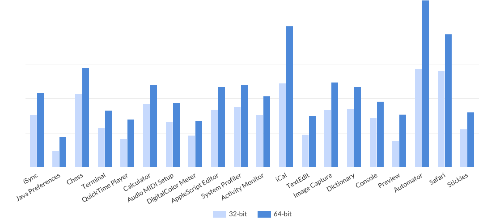

Not all Macs are created equal! Not every Mac comes with the RAM required to open and run a dozen memory-hungry Mac apps. Not everyone can afford the latest and greatest Mac that’s loaded with lots of RAM.
If you intend to run more apps at the same time, and, at the same time, maintain system performance, but can’t upgrade to the newer, faster Macs with more RAM, this is the app for you! All you need is a 64-bit Intel-powered Mac, or even a G5-powered PowerPC Mac.
"SixtyFour is one of those rare Mac apps that helps you keep your Mac longer, even when today’s apps are 64-bit and require much more RAM than Macs of just a few years ago." - Mac360
Boost Your Old Mac's Performance
Apps running in 32-bit mode take up far less memory.
If your Mac is older, or short on RAM, SixtyFour can help you reduce memory usage. SixtyFour facilitates the setting of a preference to force a 64-bit app to open in 32-bit mode. Opening a 64-bit app in 32-bit mode, reduces its memory usage by at least 10% and commonly as much as 50%. That means you can keep your Mac running longer, but running better.

Feature Highlights
SixtyFour is a very complete app, with some interesting extra features.
SixtyFour
SixtyFour presents a list of 64-bit apps that can open in 32-bit mode. Check those 64-bit apps you want to run in 32-bit mode, and you’re good to go.
Quick Look plug-in
SixtyFour extends Quick Look’s standard functionality to display extra info: app architectures, app platform info and app version.
What Our Customers Said
Don’t take our word. See our testimonials.
Anthony-Angelo
SixtyFour really helped my 2006 iMac have a second life. What I thought was a failing computer, was just one that couldn't handle as much memory as some of the 64-bit programs were taking up. Many of those programs were able to drop to 32-bit and left the system with a lot more working memory. Recommend!
Ittai
Great simple UI, easy to use, save more RAM on my old mac. Good value. Fast support for my question.
Doron Kramarczyk
Not the best UI, but does what it says. Saves memory on older devices.
Tom Tsui
Memory is king. By forcing some apps into 32-bit mode does save me more RAM for running memory-hungry applications.
Edgar Cabrera
It’s a very good little application, quite helpful to run those everyday applications in 32-bit mode in Lion, i.e., Safari, Mail, WebProcess, etc., to reduce memory usage. For more demanding applications, 64-bit is good.
Awards Won
Here’s just some of the awards SixtyFour has received.

Get the App
Don’t waste your time. Get it now.
Instructions
When the check box for an application is selected !
The application will open in 32-bit modeWhen the check box for an application is not selected !
The application will open in 64-bit modeConfigure single volume scanning
Choose Preferences… from the application menuConfigure SixtyFour Agent to remain active when SixtyFour is not running
Choose Window > SixtyFour Agent and check 'Open at Login'Purchase SixtyFour
Choose Purchase… from the application menuFeatures
Quick Look plug-in
SixtyFour extends Quick Look’s standard functionality to display extra info: app architectures, app platform info and app version. The Quick Look plug-in can be used elsewhere. It is no longer required to fire up the Terminal to get the architectures of an app or inspect the property-list file of an app to get the bundle version.
64-bit-capable Intel hardwareOS X 10.6+
Single volume scanning
SixtyFour by default scans all attached volumes. While this is great for some, for others it less than optimal (e.g., it may be of little benefit to a user who has three volumes, one for Leopard, Snow Leopard & Lion). Scanning a volume finds all apps even unregistered apps! Scanning a volume also complements the default scanning engine, try it yourself by scanning several volumes one by one and then switch back to the default behavior.
G5-based PowerPC or 64-bit-capable Intel hardwareOS X 10.5+
SixtyFour Agent
SixtyFour Agent is a standalone app, which displays the bit mode of an app when launched. It can help you determine if an app opens in 32-bit mode. The app can be set to run at all times, which was a request from a user a while ago. SixtyFour Agent does not require Growl on Snow Leopard or higher (installation of Growl is optional).
G5-based PowerPC or 64-bit-capable Intel hardwareOS X 10.5+
Performance Tools
As an added bonus, the latest version of ProcessTimer is included along with SixtyFour. ProcessTimer can be launched from the application menu, performance tools. It can help you determine whether or not to run an app in 32-bit mode. Other performance tools are also mentioned and can be downloaded manually if not installed yet. It is also possible to suggest more performance tools.
G5-based PowerPC or 64-bit-capable Intel hardwareOS X 10.5+
Documentation
The Open action under the File menu checks if the app to be opened is already running. If the app to be opened is running in a bit mode different from the preferred bit mode, you will be given the opportunity to relaunch the app instead.
The Open With action under the File menu opens an app with the selected app. Do this if you want to use a specific app, i.e., AppCleaner, AppDelete, AppZapper, etc., to open the selected app.
The Quick Look action under the File menu instantly opens a preview window with the apps selected. SixtyFour keeps the preview window open, letting you select apps until you find the one you want.
The Import action under the File menu is to be used in conjunction with the Export action under the File menu.
The Export action saves user-specific app preferences. Preferences exported to a file on OS X Lion or higher can only be imported on OS X Lion or higher.
The Reveal in Finder action under the File menu does what its name implies. On OS X Snow Leopard or higher, this action is capable of selecting multiple apps in a Finder window if the apps share the same root path.
The Keep Arranged By action under the View menu is comprised of Keep Arranged By Name, Keep Arranged By Date Modified and Keep Arranged By Date Created. The list of apps is automatically rearranged by the criteria set.
To select all apps in the list, choose Edit > Select All (or press Command-A).
To toggle a check box's state, select an app and press space bar. To toggle states of all checkboxes, choose Edit > Select All (or press Command-A) and press space bar.
General
SixtyFour? What is it?
SixtyFour is a memory optimizer and system utility for OS X. Its main purpose is the augmentation of overall system performance on low memory systems by reducing the memory overhead associated with apps running in 64-bit mode. This is accomplished by forcing 64-bit apps to open in 32-bit mode.
How does it work?
An app usually contains several versions of the code: a version intended to run on 32-bit processors and another one meant for the more recent 64-bit processors. This is necessary to ensure that the app will run on all Macs that support OS X. SixtyFour analyzes the apps on your Mac and presents a list of 64-bit apps that can open in 32-bit mode. Apps excluded from the list are apps that will not open, apps that will only open in 32-bit mode or 64-bit mode, Java apps and unregistered apps.
Isn't it risky to force an app to open in 32-bit mode?
Forcing a 64-bit app to open in 32-bit mode is safe. However, a very small number of apps (e.g., Mac App Store) may not function properly in 32-bit mode, because they may instantiate a helper app in 64-bit mode. Please contact the developer of the app directly to resolve the problem.
Wouldn't it be better to force all apps to open in 32-bit mode?
On older systems that have little memory available, it is advisable to open an app in 32-bit mode. Apps running in 32-bit mode use significantly less memory than apps running in 64-bit mode. On newer systems that have ample memory available, it is better to open an app in 64-bit mode. Apps running in 64-bit mode can access more memory than apps running in 32-bit mode.
How much memory will I save?
Opening a 64-bit app in 32-bit mode, reduces its memory usage by at least 10% and commonly as much as 50%.
Usage
Is there a way to filter or take out apps from the list?
If both the 32-bit button and 64-bit button are selected/not selected, the list will not be filtered. If the 32-bit button is selected and the 64-bit button is not selected, the list will list 64-bit apps that will open in 32-bit mode. If the 32-bit button is not selected and the 64-bit button is selected, the list will list 64-bit apps that will open in 64-bit mode. Note that the filter applied respects the input of the search field.
An app is not working after being forced to open in 32-bit mode. How do I report it?
To report an app, contact us. We will analyze the app to try to understand what is causing the problems you describe, and blacklist the app if necessary.
Are changes made persistent across reboots?
Changes made in SixtyFour will be kept across reboots. Changes made in SixtyFour are specific to the user and are not persistent when switching between user accounts.
Is SixtyFour required to be running to reflect changes made?
It is not required to keep SixtyFour running. For example, all apps forced to open in 32-bit mode will open in 32-bit mode even when SixtyFour is not running.
SixtyFour Agent does not display the bit mode of all apps launched.
SixtyFour Agent post a notification for all apps (excluding background apps).
License
When will I receive my license?
Most payment methods are processed immediately after your purchase. If you have not received your license within 24 hours, please check your spam folder. If you still have not received it, please contact us and notify us of your payment.
What does the license give rights to?
Based on the usage you give to the license you can install it on a different number of computers:
- Personal use: A license can be installed on all computers owned by the license owner or where the license owner is the primary user.
- Professional use: A license is required for each user, even when the license owner owns all the computers.
I have lost my license. How do I recover it?
We can resend you the license. Contact us and request it.
I have the license, but SixtyFour does not recognize it.
Some email clients truncate attachment filenames. SixtyFour only recognizes the file if it has the extension, .sixtyfour.
Other
I need to report a bug.
Too bad you found one. Please do not hesitate to contact us. Your feedback is important to us, as it helps us to improve SixtyFour.
Which languages is SixtyFour available in?
As of this moment, SixtyFour is localized in English.
SixtyFour is 64-bit only?
A 32-bit processor is only capable of running an app in 32-bit mode.
What are the system requirements for SixtyFour?
SixtyFour is compatible with any G5-based PowerPC or 64-bit-capable Intel hardware running OS X Leopard, Snow Leopard, Lion, Mountain Lion or Mavericks.
What payment methods are currently available?
Payment services are handled by Paddle; SixtyFour is available using any of the many payment alternatives they support: a variety of credit cards and PayPal.